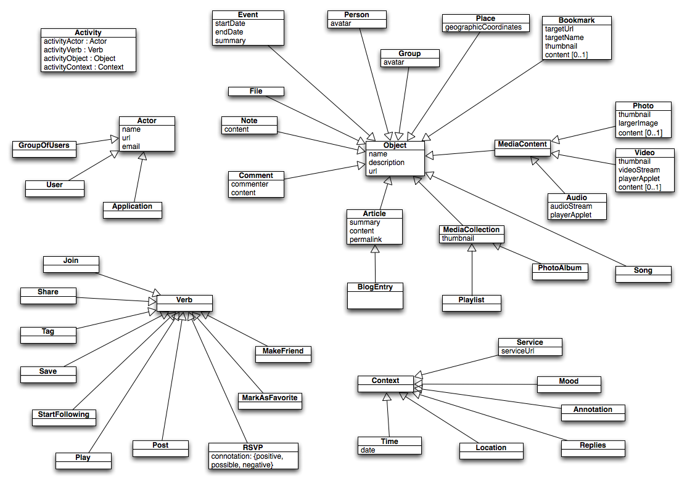

This specification describes the Atom Activity Streams Vocabulary
(AAS), defined as a dictionary of named properties and classes using
W3C's RDF technology, and specifically a mapping of the Atom Activity
Streams work to RDF.
Status of This Document
This document is the second draft, and the first draft to have an RDF version
See the changes section for details of the changes in this version of the specification.
Notational Conventions
In this document, the following namespace prefixes are used for the
given namespace URI from the referenced specification:
The choices of namespace prefix are arbitrary and not semantically
significant.
Table of Contents
Activity Streams
The Activity Streams Atom
extensions format is work to create extensions to Atom to represent
the kinds of activities that occur in social networking sites and
applications such as Facebook and MySpace. This document is a mapping
from that work to RDF and will follow it closely as it develops.
Here is an example of an Atom feed entry describing an activity
stream. Most of the content within the tag is traditional Atom,
and is the material that all popular Atom readers like Google
Reader and NewzCrawler use to render the content. The
and tags are drawn from the Activity Streams
specification, and are the portions of the entry that applications
should program against.
<entry>
<title>Snapshot Smith uploaded a photo.</title>
<id>http://www.facebook.com/album.php?aid=6&id=499225643&ref=at</id>
<link href="http://www.facebook.com/album.php?aid=6&id=499225643&ref=at" />
<published>2009-04-06T21:23:00-07:00</published>
<updated>2009-04-06T21:23:00-07:00</updated>
<author>
<name>Snapshot Smith</name>
<uri>http://www.facebook.com/people/Snapshot-Smith/499225643</uri>
</author>
<category term="Upload Photos" label="Upload Photos" />
<activity:verb>
http://activitystrea.ms/schema/1.0/post/
</activity:verb>
<activity:object>
<id>http://www.facebook.com/photo.php?pid=28&id=499225643&ref=at</id>
<thumbnail>http://photos-e.ak.fbcdn.net/photos-ak-snc1/v2692/195/117/499225643/s499225643_28_6861716.jpg</thumbnail>
<caption>A very attractive wall, indeed.</caption>
<published>2009-04-06T21:23:00-07:00</published>
<link rel="alternate" type="text/html" href="http://www.facebook.com/photo.php?pid=28&id=499225643&ref=at" />
<activity:object-type>
http://activitystrea.ms/schema/1.0/photo/
</activity:object-type>
</activity:object>
</entry>
Atom Activity Streams Vocabulary (AAS) at a glance

An a-z index of AAS terms, by class (categories or types) and
by property.
%s
AAS terms, grouped in broad categories.
AAS cross-reference: Listing AAS Classes and
Properties
AAS introduces the following classes and properties. The RDF/XML version is linked from the top of this document.
%s
%s
Validation queries
Recent Changes
- Reworded slightly to change emphasis from ontology to a mapping of an existing vocabulary (the Atom Activity Streams format) to RDF. In consequence, changed the namespace.
- Created RDF/XML version of spec.
- Marked everything as unstable for now.
- Changed literals to xsd:Strings
Previous Changes
 This work is licensed under a Creative Commons
Attribution License. This copyright applies to the Atom Activity
Streams RDF mapping Vocabulary Specification and accompanying
documentation in RDF. Atom Activity Streams RDF Mapping uses W3C's RDF technology, an open Web standard
that can be freely used by anyone.
This work is licensed under a Creative Commons
Attribution License. This copyright applies to the Atom Activity
Streams RDF mapping Vocabulary Specification and accompanying
documentation in RDF. Atom Activity Streams RDF Mapping uses W3C's RDF technology, an open Web standard
that can be freely used by anyone.